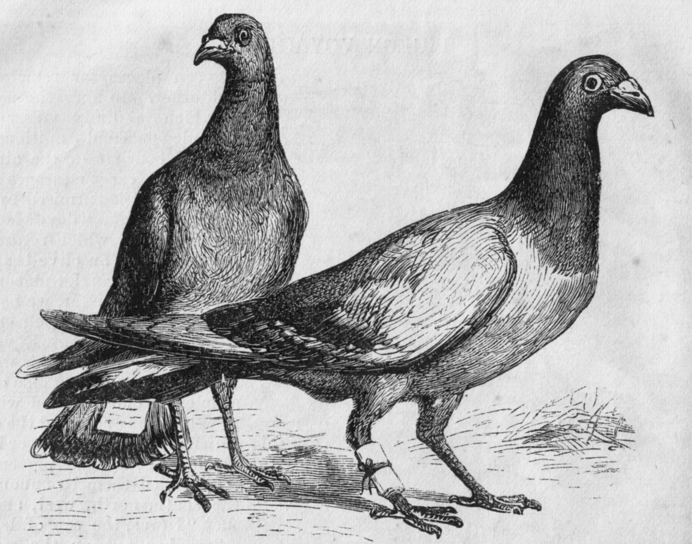

research
“The thing about speech is, it varies.” (Remirez, in press). But for a number of historical and disciplinary reasons (see McGowan, in press), it feels normal for people in my field to talk about how listeners are “confronted with” tremendous variation in speech or to think about and write about variation as a big problem that listeners have to solve. I think this is a real shame.
Hi! My research takes the position that listeners are sensitive to patterns of covariation in speech and that knowing (more on ‘knowing’ later) these subtle patterns is part of what it means to truly know a language.

Why? Because speech is social. When we speak, we communicate not only our ideas, but also numerous social cues about who we are, where we come from, what we think you already know, who we think is listening, and many other details…
Which is great because if people sound the way we expect them to, we’re able to understand them better (McGowan, 2015; 2012 LSA presentation)


This is true even when our expectations are based on stereotypes rather than authentic experience (McGowan, 2017)!

In Sumner, Kim, King, and McGowan (2014) we propose a model (below) of how the linguistic and the social aspects of speech interact to support perception.

In this model, we propose that listeners process both phonetically cued social information and phonetically cued linguistic information prior to word recognition and that these dual routes can interact to guide and facilitate perception.

For example, when Anna Babel and I told Bolivian listeners to expect Quechua-accented Spanish, they perceived vowels completely differently than if they were told to anticipate a Spanish accent (McGowan and Babel, 2020)
This suggests that experienced listeners have detailed knowledge of phonetically-cued social information —so expecting the variation consistent with a particular social category can change the way we perceive vowels. Social information isn’t noise to be thrown away, it is an essential part of the signal.

So here’s that word know again! Knowledge is not the same thing as awareness. We told listeners they’d changed speakers (from Quechua to Spanish or vice versa) and while they gave every indication of believing the switch their low level perceptual behavior stayed the same!
So does all this knowledge and sensitivity only apply to social variation?
First, some quick background on how sounds like [p], [t], and [k] differ from sounds like [b], [d], and [g] at the beginning of English words like pit and bit. What word is this native American English speaker saying? Does it sound like ‘pit’ or ‘bit’ to you?
![spectrograms of [pɪt] and [bɪt]](images/pit-bit.png)
The image to the left is a spectrogram (frequency analysis over time) of the word pit. Hear the puff of air at the beginning? It is highlighted in blue.
pit and bit both start with the lips completely closed. One of the main differences between them is the duration of the puff of air, this duration is called VOT (voice onset time).
[pʰɪt]
[bɪt]
At least in American English, that puff of air is so important that if we cut it out of pit (this was that first sound you played! ‘pit’ with the puff removed) it results in a word that sounds to English-knowing listeners a lot like bit —though probably with maybe a funny [b], and that funniness is every bit as interesting and important as the change from [p] to [b]!

Another covarying feature is the way vowels before nasal consonants in English tend to be nasalized. Listeners can use this as soon as it becomes available, not only a large distinction like bend/bed…
but also a much more subtle distinction like the difference in nasalization between these two sound files. Can you hear a difference?

This first recording has late nasalization starting 100 miliseconds after the [b].
This second recording has early nasalization starting 33 miliseconds after the [b].

In an eye tracking task we found that listeners can use nasalization as soon as it is present. Looks to the heavily-nasalized word were, on average, 60 ms faster —the same average difference between early and late nasalization in the recordings (Beddor, McGowan, Boland, Coetzee, and Brasher, 2013).

Whether the information is social, contextual, articulatory, or idiosyncratic, we humans have an astonishing ability to attend to it, remember it, and activate it during perception. This ability, my research suggests, is not irrelevant to linguistic competence or even peripheral to it, it is fundamentally and centrally part of what it means to know and speak a human language.
 Thank you for reading! Ask me questions? And please enjoy this pigeon engraving as a free gift. And many, many thanks to my friend M.C. Nee for turning me into this cartoon.